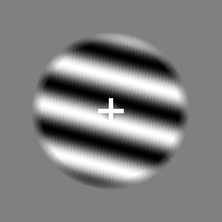
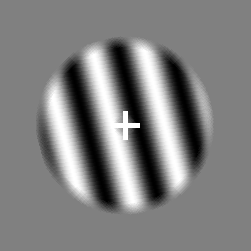

<!DOCTYPE html>
<html>
    <head>
        <title>My experiment</title>
        <script src="jspsych/dist/jspsych.js"></script>
        <script src="jspsych/dist/plugin-html-keyboard-response.js"></script>
        <script src="jspsych/dist/plugin-image-keyboard-response.js"></script>
        <script src="jspsych/dist/plugin-html-button-response.js"></script>
        <script src="jspsych/dist/plugin-call-function.js"></script>
        <script src="jspsych/dist/plugin-animation.js"></script>
        <script src="jspsych/dist/plugin-preload.js"></script>
        <script src="jspsych/dist/plugin-external-html.js"></script>
        <script src="jspsych/dist/plugin-survey-html-form.js"></script>
        <script src="jspsych/dist/plugin-survey-likert.js"></script>
        <script src="jspsych/dist/plugin-reconstruction.js"></script>
        <script src="jspsych/plugin-call-function.js"></script>

        <link href="jspsych/dist/jspsych.css" rel="stylesheet" type="text/css" />
        <link rel="stylesheet" href="https://unpkg.com/jspsych@7.0.0/css/jspsych.css">
        <link rel="stylesheet" href="ExperimentStyle.css">
    </head>
    <body></body>


    
    <script>
  
        /* VARIABLES */
  
        const num_steps = 20;
        const stim_dur  = 2000; /* milliseconds */
        const fix_dur = 250;
        const generation_dur = 3000;

        const num_ima_trials = 2; /*10th is the critical one */
        const num_ima_reps = 1; /* how often to repeat the 2 orientations */

        const num_trials_main  = 10; /* per block discrimination */
        const num_blocks = 2; 

        const CONDITION = 1 /*rotation - high cognitive control condition*/

        const practice_angle_left = -90
        const practice_angle_right = 180

        const rotation_error_margin = 0.05 /*where 0.1 = 72°*/

        const placeholder_angle = 0

        const noise_duration = 5000
        const noise_frame_interval = 100


        /* GLOBAL VARIABLES */
        window.vis_level = 38;
        window.stim_id  = 0; /* left */
        window.trl_num = 0;
        window.block_num = 0;

        /* ESSENTIALS */
        /* UPDATE TRIALS NUMBER */
        var update_trial_number = {
        type: jsPsychCallFunction,
        func: function() {
            window.trl_num++;
            }
        };

        /* FIXATION*/
        var fixation = {
        type: jsPsychHtmlKeyboardResponse,
        stimulus: '<div style="font-size:60px;">+</div>',
        choices: ["NO_KEYS"],
        trial_duration: fix_dur,
        data: {test_part: 'fixation'}
        };

        /* RESPONSE SCALES */
        var vividness_scale = [
            "1 (not at all vivid)",
            "2",
            "3",
            "4",
            "5 (as vivid as real seeing)"
            ];
        
        var confidence_scale = [
            "1 (not at all confident)",
            "2",
            "3",
            "4",
            "5 (very confident)"
            ];

        /* FUNCTIONS */

        /* FUNCTION FOR DYNAMIC NOISE */
        var noise_animation = function() {
            arr = []
            n_noise_frames = noise_duration/noise_frame_interval
            order_of_noise = jsPsych.randomization.repeat([1,2,3,4,5,6,7,8,9,10,11,12,13,14,15,16,17,18,19,20], 10);
            for (var i = 0; i < n_noise_frames; i++) {
                var random_number = order_of_noise[i];
                arr.push("img/noise_" + random_number.toString() + ".png");
            }
            return arr
        };

        /* FUNCTION FOR ROTATION STIMULUS */
        var create_practice_rotation_function_with_angle = function(preferred_angle) {
            var practice_rotation_function = function(angle_change) {
            var angle = 0 + Math.round(angle_change*720) - 360;
            var html_rotation = `
                <style> 
                    .rotateimage {transform: rotate(` + angle + `deg); position: relative; z-index: -1;} 
                </style>

                <h1> Practice Trials </h1>
                <br>
                <p> Please rotate this grating to `+ preferred_angle + `. </p>
                </img>
                <p> The angle of rotation is ` + angle + `. </p>
                <p> Press <strong> LEFT-ARROW </strong> or <strong> RIGHT-ARROW </strong> to rotate the grating. </p>
                <p> Click <strong> Save Response </strong> to continue. </p>`;
            return html_rotation;
            };
            return practice_rotation_function;
        };

        var create_practice_rotation_function_without_angle = function(preferred_angle) {
            var practice_rotation_function = function(angle_change) {
            var angle = 0 + Math.round(angle_change*720) - 360;
            var html_rotation = `
                <style> 
                    .rotateimage {transform: rotate(` + angle + `deg); position: relative; z-index: -1;}
                </style>

                <h1> Practice Trials </h1>
                <br>
                <p> Please rotate this grating to `+ preferred_angle + `. </p>
                </img>
                <p> Press <strong> LEFT-ARROW </strong> or <strong> RIGHT-ARROW </strong> to rotate the grating. </p>
                <p> Click <strong> Save Response </strong> to continue. </p>`;
            return html_rotation;
            };
            return practice_rotation_function;
        };

        var create_imagery_practice_rotation_function = function(preferred_angle) {
            var imagery_practice_rotation_function = function(angle_change) {
            var angle = 0 + Math.round(angle_change*720) - 360;
            var html_rotation = `
                <style> 
                    .rotateimage {transform: rotate(` + angle + `deg); position: relative; z-index: -1;}
                </style>

                <h1> Practice Trials </h1>
                <br>
                <p> Please rotate this grating to the orientation at which you imagined it. </p>
                </img>
                <p> Press <strong> LEFT-ARROW </strong> or <strong> RIGHT-ARROW </strong> to rotate the grating. </p>
                <p> Click <strong> Save Response </strong> to continue. </p>`;
            return html_rotation;
            };
            return imagery_practice_rotation_function;
        };

        /* FUNCTION FOR PRACTICE FEEDBACK */
        var practice_feedback = {
            type: jsPsychHtmlKeyboardResponse,
            stimulus: function() {
                var practice_response = jsPsych.data.getLastTrialData().select('response_correct').values;
                if(practice_response == 'true') {
                    return `
                        <h1> Practice Trials </h1>
                        <br>
                        <p> Your response was correct. Well done!</p>`;
                } else {
                    return `
                        <h1> Practice Trials </h1>
                        <br>
                        <p> Your response was incorrect. Try again. </p>`;
                }
            },
            prompt: '<p> Press <strong> Space </strong> to continue. </p>',
            choices: [' '],
        };
        
        /* TIMELINE */
        var timeline = [];

        /* START */

        /* PRE-LOAD MEDIA */
        var pre_load = {
            type: jsPsychPreload,
            auto_load: true, /* load all media based on timeline passed to jsPsych.run */
            message: "Please wait while loading the experiment.",
            show_progress_bar: true,
        };
        timeline.push(pre_load)

        var extra_images = ['img/stim15.png', 'img/stim75.png', 'img/stim135.png', 'img/stim_response_correct.png', 'img/stim_response_incorrect.png'];
        var pre_load_extra = {
            type: jsPsychPreload,
            images: extra_images,
            message: "Loading all the extras.",
            show_progress_bar: true,
        };
        timeline.push(pre_load_extra);

        /* WELCOME MESSAGE */
        var welcome = {
            type: jsPsychHtmlKeyboardResponse,
            stimulus: "Welcome to the experiment. Press any key to begin."
        };
        timeline.push(welcome);
        
        
        /*

        INFORMATION SHEET

        var information_sheet = {
            type: jsPsychExternalHtml,
            url: "InformationSheet.html",
            cont_btn: "Start",
            execute_script: true
        };

        timeline.push(information_sheet);


        CONSENT

        var check_consent_function = function(elem) {
            if (document.getElementById('consent_checkbox').checked) {
                return true
            }
            else {
                alert("If you wish to participate, must check the box next to the statement 'I agree to participate in this study'");
                return false;
            }
            return false
        };

        var consent_form = {
            type: jsPsychExternalHtml,
            url: "ConsentForm.html",
            cont_btn: "Start",
            check_fn: check_consent_function
        };

        timeline.push(consent_form)

        */

        /* GENERAL INSTRUCTIONS */
        var instructions = {
            type: jsPsychHtmlKeyboardResponse,
            stimulus: `
                <h1> Instructions </h1>
                <br>
                <p> In this experiment you will have to imagine <strong> gratings </strong> while looking at <strong> noise </strong> (see below). </p>
                <p> <strong> Gratings </strong> are images of alternating black and white lines (left). </p>
                <p> <strong> Noise </strong> is a collection of random black and white pixels (middle). </p>
                <p> Please imagine gratings as vividly as possible, as if they were actually presented on the screen (right). </p>
                <p> Do not close your eyes when imagining. Afterwards, you will have to indicate the vividness of your imagery and the orientation of your imagined grating. </p>
                <p> There will be practice trials before the main trials to familiarise you with the task. </p>
                </img>`,
            prompt: '<p> Press <strong> Space </strong> to continue. </p>',
            choices: [' '],
        };
        timeline.push(instructions);
        
        
        /* IMAGERY PRACTICE*/
        var instructions_imageryPractice = {
            type: jsPsychHtmlKeyboardResponse,
            stimulus: function() {
                if (window.stim_id == 0) {
                    var stim_instr = "a left tilted grating";
                    var stim_pic = 'img/stim_1_vis_50.png';
                } else if (window.stim_id == 1) {
                    var stim_instr = "a right tilted grating";
                    var stim_pic = 'img/stim_2_vis_50.png';
                }
                return `
                    <h1> Practice Trials </h1>
                    <p> You will now practice generating an image in your mind.
                    <p> On the next screen, please imagine ` + stim_instr + ` when noise is presented. </p> 
                    <p> Imagine the grating as vividly as possible, as if it was actually presented on the screen (see below). </p>
                    <p> Please keep your eyes open and maintain the image in your mind. </p>
                    <p> After each trial, you will be asked to rate the vividness of your imagery. </p> 
                    <p> On a scale from 1 (not at all vivid) to 5 (as vivid as real seeing). </p>
                    </img>
                    <p> Press <strong> Space </strong> to continue. </p>` 
            },
            choices: [' '],
            post_trial_gap: 500, 
        };

        var brief_blank = {
        type: jsPsychHtmlKeyboardResponse,
        stimulus: ' ',
        choices: ["NO_KEYS"],
        trial_duration: 500,
        data: {test_part: 'brief blank'}
        };

        var show_dynamic_noise = {
            type: jsPsychAnimation,
            stimuli: function() {
                arr = noise_animation();
                jsPsych.pluginAPI.preloadImages(arr)
                return arr
                },
            choices: ["NO_KEYS"],
            frame_isi: 0,
            frame_time: noise_frame_interval
        };

        var ima_response = {
            type: jsPsychSurveyLikert,
            preamble: '<p> <strong> Vividness Judgement </strong> </p>',
            questions: [
                {prompt: "How vivid was your mental image?", name: "vividness judgement", labels: vividness_scale, required: true},
            ],
            scale_width: 500,
            data: {test_part: 'vividness judgement'},
        };

        var ima_practice = {
            timeline: [brief_blank, fixation, show_dynamic_noise, ima_response],
            repetitions: 2
        };

        timeline.push(instructions_imageryPractice, ima_practice);


        /* ROTATION PRACTICE INSTRUCTIONS */
        var practice_instructions = {
            type: jsPsychHtmlKeyboardResponse,
            stimulus: `
            <h1> Practice Trials </h1>
            <br>
            <p> You will now practice rotating gratings. This task will later be used to collect your responses. </p>
            <p> On the next screen, please rotate a shown grating to a given orientation. </p> 
            <p> Press the <strong> LEFT-ARROW </strong> or <strong> RIGHT-ARROW </strong> key to rotate the grating. </p>
            <p> For this practice round, the angle of rotation will be display on the screen. </p>
            </img>`,
            prompt: '<p> Press <strong> Space </strong> to continue. </p>',
            choices: [' '],
        };
        timeline.push(practice_instructions);


        /* PRACTICE ROTATION WITH ANGLE IN TEXT */
        /* PRACTICE TRIAL ROTATION LEFT */
        var practice_rotation = {
            type: jsPsychReconstruction,
            stim_function: create_practice_rotation_function_with_angle(practice_angle_left),
            key_increase: 'ArrowRight',
            key_decrease: 'ArrowLeft',
            step_size: 1/720,
            starting_value: 0.5,
            button_label: 'Save Response',
            data: {test_part: 'practice_rotation', correct_response: practice_angle_left},
            on_finish: function(data) {
                data.response_outcome = Math.abs((data.final_value) - ((360 + (data.correct_response))/720));
                data.response_correct = Math.abs((data.final_value) - ((360 + (data.correct_response))/720)) < 0.001;
            }
        };

        var feedback_loop = {
            timeline: [practice_rotation, practice_feedback],
            loop_function: function(data) {
                var list_of_responses = jsPsych.data.get().select('response_correct').values;
                var last_response = list_of_responses[list_of_responses.length - 1];
                if(last_response) {
                    return false;
                } else {
                    return true;
                }
            }
        };
        timeline.push(feedback_loop);

        /* PRACTICE TRIAL ROTATION RIGHT */
        var practice_rotation = {
            type: jsPsychReconstruction,
            stim_function: create_practice_rotation_function_with_angle(practice_angle_right),
            key_increase: 'ArrowRight',
            key_decrease: 'ArrowLeft',
            step_size: 1/720,
            starting_value: 0.5,
            button_label: 'Save Response',
            data: {test_part: 'practice_rotation', correct_response: practice_angle_right},
            on_finish: function(data) {
                data.response_outcome = Math.abs((data.final_value) - ((360 + (data.correct_response))/720));
                data.response_correct = Math.abs((data.final_value) - ((360 + (data.correct_response))/720)) < 0.001;
            }
        };
        
        var feedback_loop = {
            timeline: [practice_rotation, practice_feedback],
            loop_function: function(data) {
                var list_of_responses = jsPsych.data.get().select('response_correct').values;
                var last_response = list_of_responses[list_of_responses.length - 1];
                if(last_response) {
                    return false;
                } else {
                    return true;
                }
            }
        };
        timeline.push(feedback_loop);
        

        /* ROTATION PRACTICE INSTRUCTIONS */
        var practice_instructions = {
            type: jsPsychHtmlKeyboardResponse,
            stimulus: `
            <h1> Practice Trials </h1>
            <br>
            <p> On the next trials you will still practice rotating gratings. </p>
            <p> However, unlike before the angle of rotation will no longer be displayed. </p> 
            <p> It may seem more difficult but try your best. Take as much time as you need. </p>
            </img>
            <p> <s> The angle of rotation is 0° </s> </p>`,
            prompt: '<p> Press <strong> Space </strong> to continue. </p>',
            choices: [' '],
        };
        timeline.push(practice_instructions);

        
        /* PRACTICE ROTATION NO TEXT BUT ERROR MARGIN */
        /* PRACTICE TRIAL ROTATION LEFT */
        var practice_rotation = {
            type: jsPsychReconstruction,
            stim_function: create_practice_rotation_function_without_angle(practice_angle_left),
            key_increase: 'ArrowRight',
            key_decrease: 'ArrowLeft',
            step_size: 1/720,
            starting_value: 0.5,
            button_label: 'Save Response',
            data: {test_part: 'practice_rotation', correct_response: practice_angle_left},
            on_finish: function(data) {
                data.response_outcome = Math.abs((data.final_value) - ((360 + (data.correct_response))/720));
                data.response_correct = Math.abs((data.final_value) - ((360 + (data.correct_response))/720)) < 0.001 + rotation_error_margin;
            }
        };

        var feedback_loop = {
            timeline: [practice_rotation, practice_feedback],
            loop_function: function(data) {
                var list_of_responses = jsPsych.data.get().select('response_correct').values;
                var last_response = list_of_responses[list_of_responses.length - 1];
                if(last_response) {
                    return false;
                } else {
                    return true;
                }
            }
        };
        timeline.push(feedback_loop);

        /* PRACTICE TRIAL ROTATION RIGHT */
        var practice_rotation = {
            type: jsPsychReconstruction,
            stim_function: create_practice_rotation_function_without_angle(practice_angle_right),
            key_increase: 'ArrowRight',
            key_decrease: 'ArrowLeft',
            step_size: 1/720,
            starting_value: 0.5,
            button_label: 'Save Response',
            data: {test_part: 'practice_rotation', correct_response: practice_angle_right},
            on_finish: function(data) {
                data.response_outcome = Math.abs((data.final_value) - ((360 + (data.correct_response))/720));
                data.response_correct = Math.abs((data.final_value) - ((360 + (data.correct_response))/720)) < 0.001 + rotation_error_margin;
            }
        };
        
        var feedback_loop = {
            timeline: [practice_rotation, practice_feedback],
            loop_function: function(data) {
                var list_of_responses = jsPsych.data.get().select('response_correct').values;
                var last_response = list_of_responses[list_of_responses.length - 1];
                if(last_response) {
                    return false;
                } else {
                    return true;
                }
            }
        };
        timeline.push(feedback_loop);


        /* IMAGERY + ROTATION PRACTICE*/
        var instructions_imageryRotationPractice = {
            type: jsPsychHtmlKeyboardResponse,
            stimulus: function() {
                if (window.stim_id == 0) {
                    var stim_instr = "a left tilted grating";
                    var stim_pic = 'img/stim_1_vis_50.png';
                } else if (window.stim_id == 1) {
                    var stim_instr = "a right tilted grating";
                    var stim_pic = 'img/stim_2_vis_50.png';
                }
                return `
                    <h1> Practice Trials </h1>
                    <br>
                    <p> During the next few trials you will practice both the image generation and rotation task together. </p>
                    <p> First, you will have to generate an image in your mind and rate its vividness. Then you will have to rotate a grating to that image. </p> 
                    <p> Remember to keep your eyes open and maintain the image in your mind when noise is presented. </p>
                    <p> Imagine the grating as vividly as possible, as if it was actually presented on the screen (see below). </p> 
                    </img>` 
            },
            prompt: '<p> Press <strong> Space </strong> to continue. </p>',
            choices: [' '],
            post_trial_gap: 500, 
        }
        timeline.push(instructions_imageryRotationPractice);

        var imagery_practice_rotation = {
            type: jsPsychReconstruction,
            stim_function: create_imagery_practice_rotation_function(placeholder_angle),
            key_increase: 'ArrowRight',
            key_decrease: 'ArrowLeft',
            step_size: 1/720,
            starting_value: 0.5,
            button_label: 'Save Response',
            data: {test_part: 'imagery_practice_rotation',},
            on_finish: function(data) {
                data.response_as_angle = data.final_value*720 - 360;
            }
        };

        var imaRot_practice = {
            timeline: [brief_blank, fixation, show_dynamic_noise, ima_response, imagery_practice_rotation],
            repetitions: 2
        };
        timeline.push(imaRot_practice);

        /* 9 + 1 TRIALS */
        /* INSTRUCTIONS */
        var information_test_trial_start = {
            type: jsPsychHtmlKeyboardResponse,
            stimulus: `
            <h1> Main Task </h1>
            <br> 
            <p> You have completed all practice trials. </p>
            <p> Next, you will complete 6 trials that are a mix of the imagery and rotation trials. </p>
            <p> Instructions will be repeated on the next screen. </p>`,
            prompt: '<p> Press <strong> Space </strong> to continue. </p>',
            choices: [' '],
        };
        timeline.push(information_test_trial_start);

        var instructions_imagery = {
            type: jsPsychHtmlKeyboardResponse,
            stimulus: function() {
                if (window.stim_id == 0) {
                    var stim_instr = "a left tilted grating";
                    var stim_pic = 'img/stim_1_vis_50.png';
                } else if (window.stim_id == 1) {
                    var stim_instr = "a right tilted grating";
                    var stim_pic = 'img/stim_2_vis_50.png';
                }
                return `
                    <h1> Main Experiment </h1>
                    <br>
                    <p> First, imagine the grating as vividly as possible, as if it was actually presented on the screen (see below). </p>
                    <p> When noise is presented, please keep your eyes open and maintain the image in your mind. </p>
                    <p> On some trials, you will be asked to rotate the image to a 90°. </p> 
                    <p> After each trial, you will be asked to rate the vividness of your imagery. </p> 
                    <p> On a scale from 1 (not at all vivid) to 5 (perfectly clear and as vivid as real seeing). </p>
                    </img>` 
            },
            prompt: '<p> Press <strong> Space </strong> to continue. </p>',
            choices: [' '],
            post_trial_gap: 500, 
        }
        timeline.push(instructions_imagery);


        /* 9 NORMAL TRIALS */
        var ima_procedure = {
            timeline: [brief_blank, fixation, show_dynamic_noise, ima_response],
            repetitions: num_ima_trials
        };
        timeline.push(ima_procedure);


        /* CRITICAL TRIAL */
        var rotate_instruction = {
            type: jsPsychHtmlKeyboardResponse,
            stimulus: `
            <p> In this trial, please imagine the grating. </p>
            <p> Then, please rotate the grating by 90° while the fixation cross is presented. </p>`,
            prompt: '<p> Press <strong> Space </strong> to continue. </p>',
            choices: [' ']
        };

        var show_dynamic_stimulus= {
            type: jsPsychAnimation,
            stimuli:
            function() {
                arr = makeStimSequence(1,window.vis_level,num_steps,0);
                jsPsych.pluginAPI.preloadImages(arr)
                return arr
            },
            choices: ["NO_KEYS"],
            frame_isi: 0,
            frame_time: Math.round(stim_dur/num_steps)
        };

        var critical_question = {
            type: jsPsychHtmlButtonResponse,
            stimulus: `
                <p> On the last trial, was there a grating presented on the screen? </p>
                <p> [No] No, there was only noise on the screen, any grating I saw was my imagination. </p>
                <p> [Yes] Yes, there was a real grating on the screen. </p>
                </img>`,
            choices: ['No','Yes'],
            prompt: "<p> Select the button corresponding to your answer. </p>",
            data: {test_part: 'critical_trial', correct_response: 1 /*left tilted*/},
            on_finish: function(data){
                data.correct = data.response === data.correct_response;
            },
        };

        timeline.push(rotate_instruction, fixation, show_dynamic_stimulus, ima_response, critical_question);
        
        /* ROTATION AFTER CRITICAL QUESTION */
        var trial_rotation_function = function(angle_change) {
            var angle = 0 + Math.round(angle_change*360);
            var html_rotation = `
                <style> 
                    .rotateimage {transform: rotate(` + angle + `deg);} 
                </style>

                <p> <strong> Final Trial </strong> </p>
                <br>
                <p> Rotate the grating to your imagined orientation. </p>
                </img>
                <p> Press the <strong> LEFT-ARROW </strong> or <strong> RIGHT-ARROW </strong> key to rotate. </p>
                <br>`;
            return html_rotation;
        };

        var practice_rotation = {
            type: jsPsychReconstruction,
            stim_function: trial_rotation_function,
            key_increase: 'ArrowRight',
            key_decrease: 'ArrowLeft',
            step_size: 1/360,
            starting_value: 0,
            data: {test_part: 'trial_rotation'},
        };

        
        /* DISCRIMINATION */
        var detection_start = {
            type: jsPsychHtmlKeyboardResponse,
            stimulus: `
            <p> During the final part of the experiment you will discriminate left and right tilted gratings </p>
            <p>On every trial, a grating will gradually appear in the noise </p>
            <p>Sometimes the grating will be left tilted and sometimes it will be right tilted </p>
            <p>After each trial, if you saw a left tilted grating press [F] </p>
            <p>If you saw a right tilted grating press [J] </p>
            <p>The gratings will be quite hard to see, so please look carefully </p>
            <p>There wil be ` + num_blocks +  ` discrimination blocks lasting ~1 min each </p>`,
            prompt: '<p> Press <strong> Space </strong> to continue. </p>',
            choices: [' ']
            };
        timeline.push(detection_start);

        /* run over blocks */
        var response = ['F','J'];
        for (var block = 0; block < num_blocks; block++){

            var block_start = {
                type: jsPsychHtmlKeyboardResponse,
                stimulus: function() {
                window.trl_num = 0;
                window.trial_order = jsPsych.randomization.repeat([1,2],num_trials_main/2);
                return `
                <br> 
                <p> This is block ` + (window.block_num+1) + ` out of ` + num_blocks + `. </p>
                <br> 
                <br> 
                <p> Press <strong> SPACE </strong> to continue. </p>`
            },
            choices: [' ']
            };
            timeline.push(block_start);

            /* trial loop */
            for (var trl = 0; trl < num_trials_main; trl++){

                var show_dynamic_stimulus = {
                type: jsPsychAnimation,
                stimuli: function() {

                    window.stim_nr = window.trial_order[window.trl_num];
                    arr = makeStimSequence(1, window.vis_level,num_steps,window.stim_nr);
                    jsPsych.pluginAPI.preloadImages(arr)
                    return arr
                },
                choices: ["NO_KEYS"] ,
                frame_isi: 0,
                frame_time: Math.round(stim_dur/num_steps),
                on_finish: function(){
                    console.log(window.stim_nr);
                }
                };

                var response_screen = {
                type: jsPsychHtmlKeyboardResponse,
                choices: ['F','J'],
                stimulus: 'Was there a left tilted or right tilted grating on the screen?',
                prompt: 'Left tilted <strong> F </strong> - Right tilted <strong> J </strong>',
                data: function() {
                    window.stim_nr = window.trial_order[window.trl_num];
                    return {test_part: 'discrimination_test', correct_response: response[window.stim_nr-1]}
                },
                on_finish: function(data){
                    data.correct = data.key_press; /*need to check the output for this is understandable */
                    data.response_correct = jsPsych.pluginAPI.compareKeys(data.correct_response, data.response);
                }
                };
                timeline.push(fixation,show_dynamic_stimulus,response_screen, update_trial_number);
            }

            /* update block number */
            var update_block_number = {
                type: jsPsychCallFunction,
                func: function() {
                window.block_num++;
                }
            };
            timeline.push(update_block_number);
        }


        /* DEBRIEF */
        var debrief_questions = {
            type: jsPsychSurveyHtmlForm,
            preamble: '<p> <strong> Demographics Questionnaire </strong> </p>',
            html: `
                <p> The answer to these question will not affect your payment. </p> 

                <p> What is your age? 

                    <input type="number" id="debrief_question_age" name="age" min="18" max="120" required/>

                </p>

                <p> Did you actually imagine the gratings when we asked you to? 

                    <input type="radio" id="debrief_question_imageryintent_yes" name="imageryintent" value="yes" required/> 
                    <label for="debrief_question_imageryintent_yes">Yes</label> 
                    
                    <input type="radio" id="debrief_question_imageryintent_no" name="imageryintent" value="no" required/> 
                    <label for="debrief_question_imageryintent_no">No</label>

                </p> 

                <p> Do you have any other comments?

                    <input type="text" id="comments" name="comments" size="25" />

                </p>`,
            button_label: 'Finish',
            autofocus: 'debrief_question_age',
        };
        timeline.push(debrief_questions);


        /* INIT JS PSYCH */
        var jsPsych = initJsPsych({
            minimum_valid_rt: 500,
            on_finish: function() {
                jsPsych.data.displayData();
            }
        });
        jsPsych.run(timeline);
  
    </script>
</html>